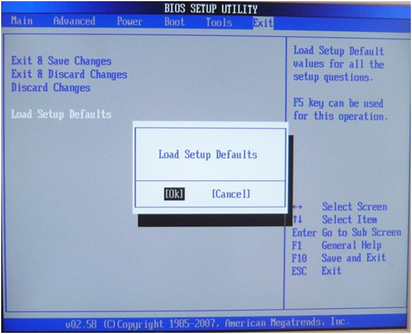

Для работы и навигации по BIOSчаще используются следующие клавиши:
«←» и «→» - перемещение между пунктами главного меню;
«↑» и «↓» - перемещение вверх и вниз;
«Enter» - вход в подменю, обозначенное слева треугольником;
«Esc» - выход из подраздела или переход в раздел Exit (выход);
«F1» или «Alt» + «H» - вызов справки;
«-» (минус на цифровой клавиатуре) - предыдущее значение опции;
«+» (плюс на цифровой клавиатуре) - следующее значение опции;
«Home» и «PgUp» - переход к первой опции текущего пункта меню;
«End» и «PgDn» - переход к последней опции текущего пункта меню;
«F5» - задействовать значения опций, назначенные изготовителем по умолчанию;
«F10» - сохранение всех измененных значений и выход из BIOS`а.
